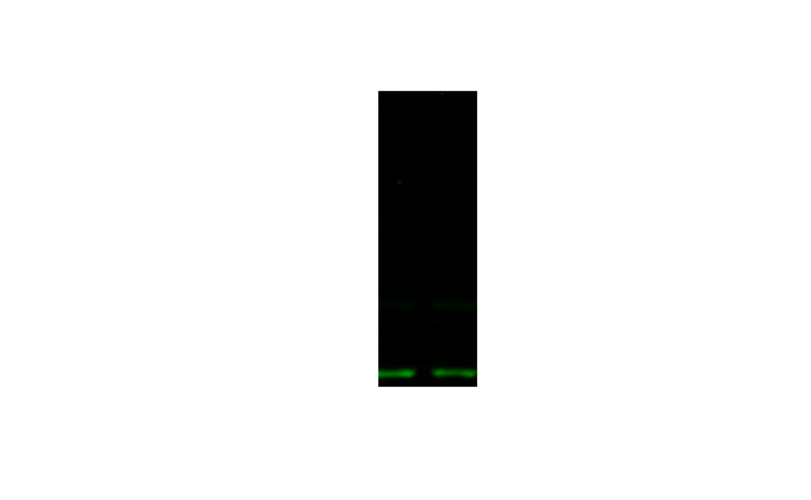

Introduction
This package is a utility belt for working with Western blot images in R. It’s primarily focused on making annotation easier.
Getting set up with webber
You need to introduce yourself to webber so that you can more easily
pull files from Sharepoint. Fortunately, that’s rather simple: just run
wb_setup(). It’ll tell you to paste a few lines into your
.Rprofile (which it will handily open up for you), and you’ll need to
add your folder name (which should just be
lastname-firstname). After you restart R, you should be
ready to go (provided you’ve introduced
yourself to Sharepoint)
Looking through files
Most of the time I don’t really know the exact path of the file I’m
looking for. webber makes this easy with wb_list:
#> name size
#> 1 Raw Data/licor/aragaki-kai/2022-04-04 4480648
#> 2 Raw Data/licor/aragaki-kai/2022-04-20_bupa-dr 2018128
#> 3 Raw Data/licor/aragaki-kai/2022-04-20_erda-tc 1492864
#> 4 Raw Data/licor/aragaki-kai/2022-04-20_pemi-tc 746432
#> 5 Raw Data/licor/aragaki-kai/2022-04-28_rt112-igfr-kd 1064087
#> 6 Raw Data/licor/aragaki-kai/2022-05-11_uc14-nt-835_nt-irf1si_wo-w-dox 4424925
#> isdir id
#> 1 TRUE 013PDU6SSJG5PQELW2JZB22SXQOVX5UNEQ
#> 2 TRUE 013PDU6SWOQEF2EVTREZCKCPYEMYQAS2BY
#> 3 TRUE 013PDU6SQZBJKUT7YZHBGZHXKHALNKEPYU
#> 4 TRUE 013PDU6SSHCQEVJEMGJRGIPXSQV7UNJBEX
#> 5 TRUE 013PDU6SXTXPJ3Y5NEWJH3CTHSNYXQ6YMN
#> 6 TRUE 013PDU6SWZLCYWV3XAZJF2YVX2LTAQL2IWNotice how I didn’t have to specify my name - that’s because of the introduction that we did earlier. If I wanted to root around in someone else’s folder, I could do this:
wb_list("/", user = "arbuiso-alyssa")#> name size isdir
#> 1 Raw Data/licor/arbuiso-alyssa/2023-02-14_rt112-100nm-cm272 41214201 TRUE
#> id
#> 1 013PDU6SU3ESBH6BUQTBAKQ7JFLBKJ3V6RIf you want to drill deeper into a folder, you can do this:
wb_list("/2022-04-20_bupa-dr")#> name size
#> 1 Raw Data/licor/aragaki-kai/2022-04-20_bupa-dr/pakt.tif 996356
#> 2 Raw Data/licor/aragaki-kai/2022-04-20_bupa-dr/pakt-s473-actin.tif 1021772
#> isdir id
#> 1 FALSE 013PDU6SQNCRN5B6WB2ZBJJNIQGWNMRGBW
#> 2 FALSE 013PDU6SWOT55JIX5VCBGLU2ZW5OYDGUHCGetting
When you’ve found your file or folder of interest, you download it
with wb_get. I’m going to download a single file, but you
can do this with whole folders:
Editing
With our file in hand, we can now edit it. For this, we call upon the
delightful magick R package, which uses
imagemagick under the hood.
image <- image_read(file)
imageThe first part - the hardest part - is cropping it down to size.
imagemagick (henceforth magick) specifies
that the TOP LEFT corner is (0, 0). So if I do this:
image_crop(image, "100x300") |>
plot()I get the upper left hand portion.
If I wanted to offset where the area was (I still want it to be 100x300, say, but I want it closer to the bottom) I can specify an offset:
image_crop(image, "100x300+0+100") |>
plot()And if I want it closer to the middle:
image_crop(image, "100x300+100+0") |>
plot()
So how do you make sure you crop the right portion? Unfortunately I don’t have a perfect answer for you. You can do trial and error, or you can bring it into a photo editor and measure the dimensions and coordinates of your crop there. The things we do for reproducibility.
cropped <- image_crop(image, "370x100+90+200")
plot(cropped)Now it just so happens that this dose response is backward - higher concentrations on the left, lower on the right. I prefer it the other way.
flopped <- image_flop(cropped)
plot(flopped)Great - we’re ready to annotate!
Annotating
Now, back to webber.
To annotate blot lanes with webber, you need to construct a
tibble with one row per lane, and one column per line of
annotation.
# Why a tibble and not a regular data.frame?
# tibbles preserve spaces in their column names, which makes them display nicer.
annot <-
tibble(
"Cell line" = "UC6",
"Buparlisib (nM)" = c("DMSO", "1", "10", "100", "1000", "10000")
)
annot
#> # A tibble: 6 × 2
#> `Cell line` `Buparlisib (nM)`
#> <chr> <chr>
#> 1 UC6 DMSO
#> 2 UC6 1
#> 3 UC6 10
#> 4 UC6 100
#> 5 UC6 1000
#> 6 UC6 10000Then supply the tibble to
wb_annot_lanes:
wb <- wb_annot_lanes(flopped, annot, n_lanes = 6, text_size = 4)
plot(wb)